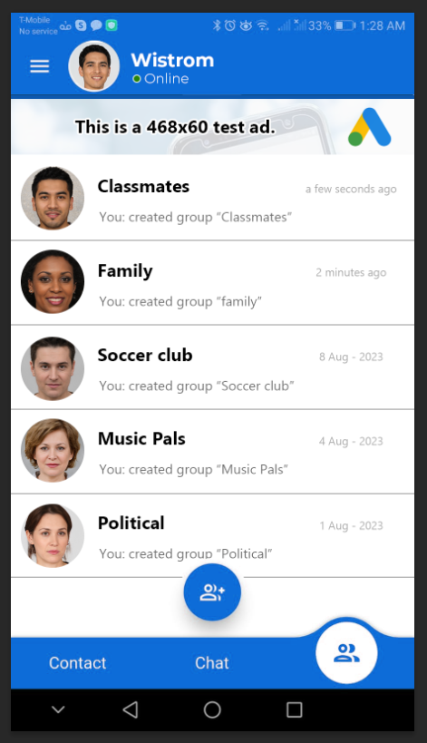
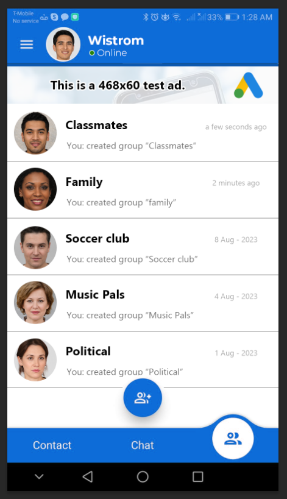

VAJO CHAT : Chat sécurisé crypté
"Freiheit ist mein Geburtsrecht"
De nos jours, le monde est envahi d'entités qui vont des gouvernements véreux aux pirates informatiques à temps partiel, aux organisations de type Stasi aux pouvoirs illimités, et aux entreprises détenues par des milliardaires aux pouvoirs et à la portée dignes d'un Dieu. Pour ces entités, vous ne représentez que le petit cafard qui vit dans leur cuisine et qui doit être observé, surveillé, suivi et, "pour votre propre sécurité, monsieur", être tenu en laisse depuis sa naissance jusqu'à son enterrement.

 

Et oui, chaque acte intrusif visant à "défoncer votre porte numérique" est appuyé par des lois obscures qui ont tendance à porter des noms gentiment cyniques tels que "Loi sur la protection des libertés". Certaines organisations et entreprises intrusives de par le monde font passer la pauvre Stasi (Staatssicherheit) et ses écoutes téléphoniques pour des vulgaires scouts en comparaison.
Les applications de chat de renom siphonnent vos informations pour les communiquer à leurs monstres de calcul qui disposent déjà d'énormes quantités d'informations à votre sujet. Toutes ces applications ont une "politique de confidentialité" qui s'étend sur des pages et des pages et que personne ne peut jamais comprendre ou déchiffrer. Chaque action arrogante et intrusive est enrobée d'une phrase cynique et édulcorée qui abuse habituellement de mots tels que "spécial", "patriotique", "liberté", "sécurité", etc. Vous pourriez vous armer jusqu'aux dents que ça ne changerait à votre situation de cafard.
Et pire encore, tout ce que vous dites est stocké sur leurs serveurs jusqu'à ce qu'ils en aient besoin ou que leur organisation officielle "affiliée" quelque part dans le monde s'intéresse à votre petite vie.
Vajo Encrypted Secure Chat (VESCH) comble un besoin urgent dans le monde entier :
Une application de communication simple qui protège ce que vous racontez dans vos discussions privées.
Vajo Chat ne fait pas grand chose, il se contente de faire quelques petites tâches qu'il accomplit parfaitement. Il crypte vos messages, les transmet à votre destinataire via notre serveur, ils sont décryptés sur le téléphone de votre destinataire, et dès que votre destinataire les reçoit, ils sont supprimés de notre serveur pour toujours. Ces messages n'existent que sur votre téléphone et celui de la personne avec qui vous chattez.
Vajo Chat ne permet que la transmission de deux types de fichiers en pièces jointes, les images et les PDF.
Votre compte Vajo n'est en aucun cas lié à votre numéro de téléphone. Il vous suffit de créer un email où vous voulez et d'utiliser cet email pour créer un compte GRATUIT, et le tour est joué.
Vajo Chat n'a pas de version PC car, peu importe ce que l'on vous dit, ces environnements sont difficiles à sécuriser.
Il s'agit d'un programme minimaliste de CHAT + IMAGES + PDFs hautement protégé par un cryptage asymétrique pour que les messages ne puissent être lus par personne au milieu, ils ne sont d'ailleurs jamais sauvegardés sur le serveur, l'option de sauvegarder les messages ou de les sauvegarder sur le serveur n'existe même pas. Nous n'utilisons pas d'API externe à cette fin.
En quelques secondes, vous pourrez supprimer votre compte de notre serveur et vos messages de votre téléphone dans le cas d'une situation urgente.
Actuellement Vajo Chat ne prend pas en charge les messages vocaux, cette option peut être proposée à l'avenir SI nous sommes en mesure de nous assurer qu'elle est ininterceptable.
La version gratuite vous permet de communiquer de manière illimitée avec jusqu'à 10 utilisateurs et d'avoir 3 groupes. La version gratuite comprend des publicités Google Ads pour nous aider à couvrir nos frais de fonctionnement. La version PRO n'a pas de limites d'utilisateurs et de groupes et n'a pas de publicités.
Téléchargez l'APP VAJO ENCRYPTED SECURE CHAT dès aujourd'hui et testez-la.
Veuillez envoyer toutes vos suggestions d'amélioration à support@vajo.com.
Comment Utiliser Vajo Chat
C'est simple comme bonjour. Il vous suffit de saisir une adresse électronique (n'importe laquelle) et un mot de passe, de créer un compte, de vérifier votre adresse électronique et le tour est joué. Connectez-vous maintenant. Les utilisateurs peuvent rechercher un utilisateur par son nom d'utilisateur et dire "Bonjour". Si l'autre personne accepte, la session de chat commence. Il vous est également possible de créer un groupe et d'y ajouter des utilisateurs. Son fonctionnement est similaire à celui de n'importe quelle application de chat.
Si vous vous posez la question, "pourquoi avons-nous besoin de votre adresse électronique ?", c'est pour vous tenir informé de tout changement ; et pour vous envoyer un nouveau mot de passe si vous le perdez.